01 ·
Diseño gráfico
Dirección visual, piezas para redes, brochures, programas, presentaciones, credenciales, certificados y más.
- Identidad
- Editorial
- Digital + impreso
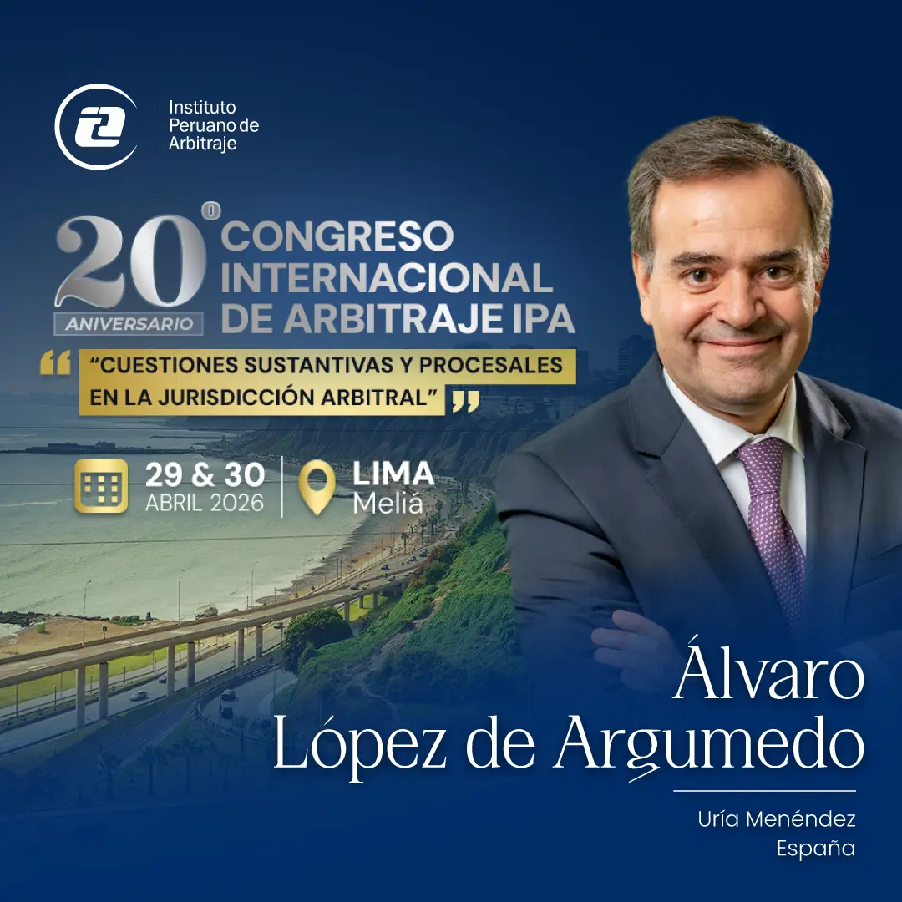
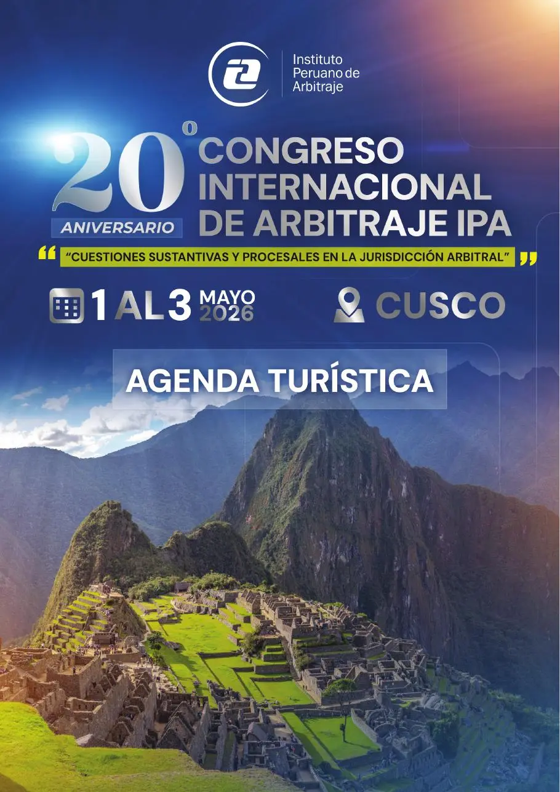
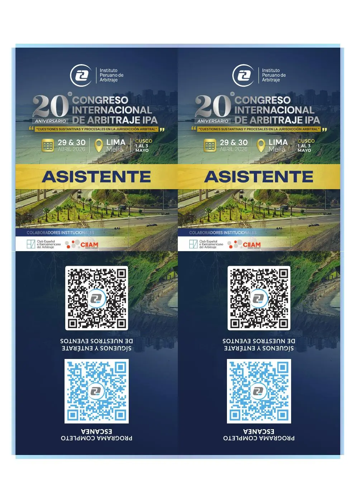
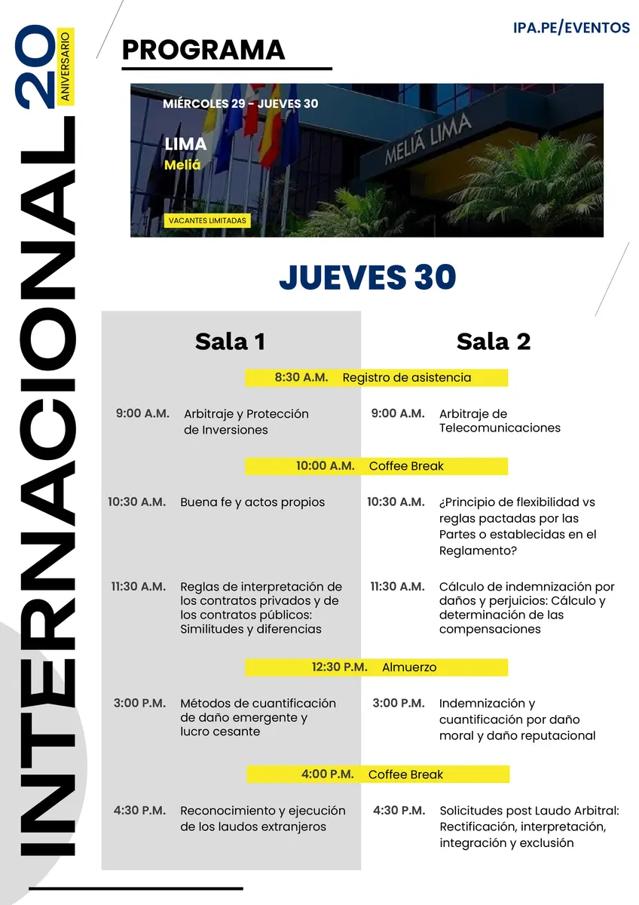
Diseño gráfico · contenido digital · eventos
Diseño, edición, social media, web y cobertura de eventos.
proyectos de diseño, edición, contenido, web y eventos.
↓01 ·
Dirección visual, piezas para redes, brochures, programas, presentaciones, credenciales, certificados y más.




02 ·
Tutoriales, entrevistas, eventos y piezas cortas para redes: selección, montaje, gráficos, audio y adaptación por canal.
03 ·
Planificación, diseño, adaptación, copy, publicación y gestión de comunidad para eventos institucionaless.
04 ·
Diseño de páginas, actualización continua, carga de eventos y mantenimiento de información institucional.
05 · Cobertura de eventos
Cobertura fotográfica y audiovisual, coordinación de equipo, selección y edición para publicación durante el evento o entrega posterior.
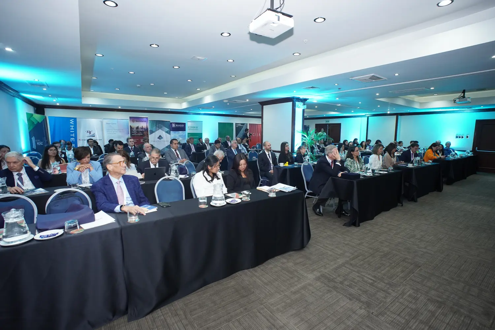
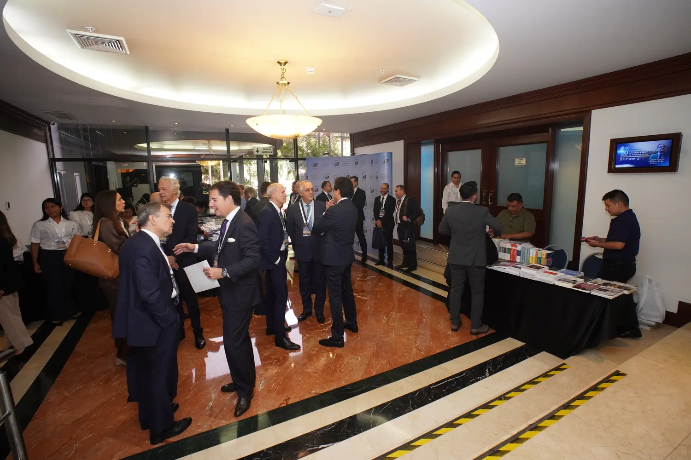
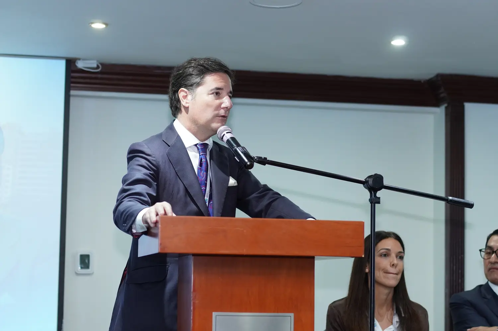
Instituto Peruano de Arbitraje · Derecho y eventos
El XX Congreso Internacional de Arbitraje reunió 91 ponentes, programación paralela, contenido digital, material impreso, web y cobertura audiovisual en una edición especial entre Lima y Cusco.
Explorar el caso completo ↗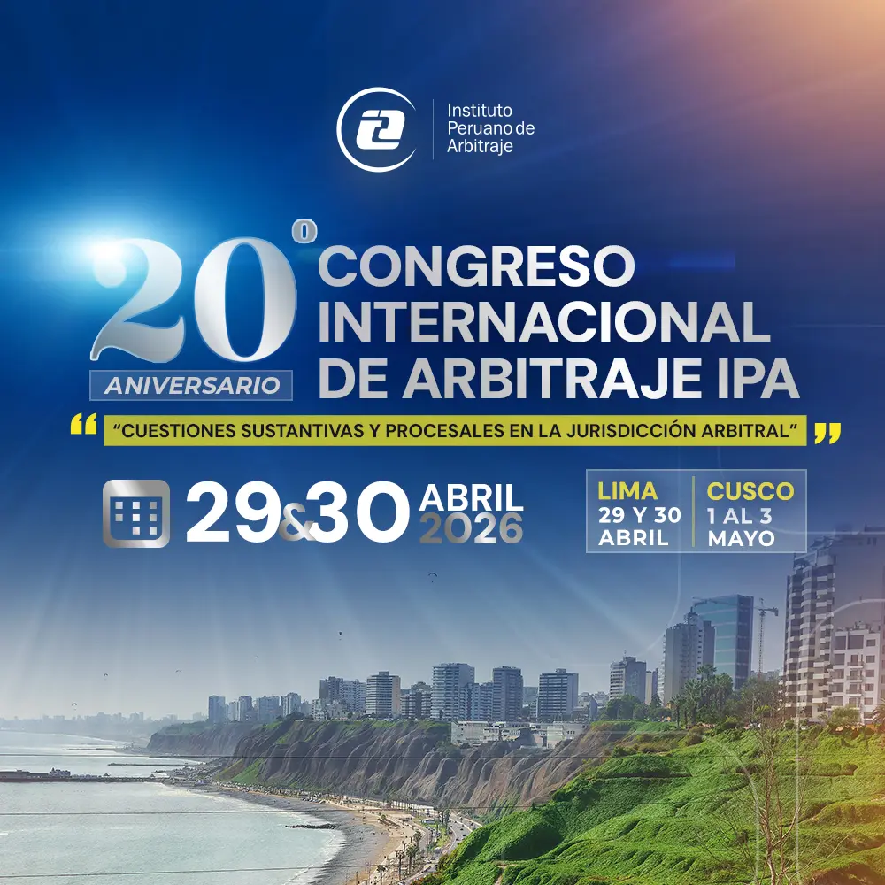
He trabajado con
Derecho y eventos
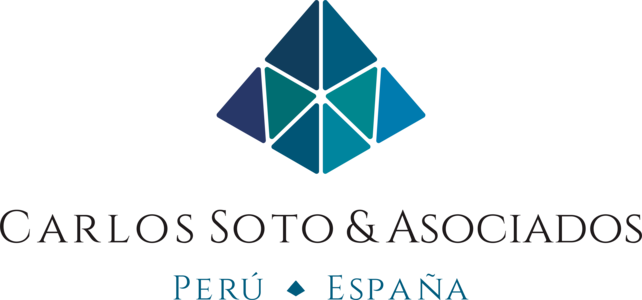
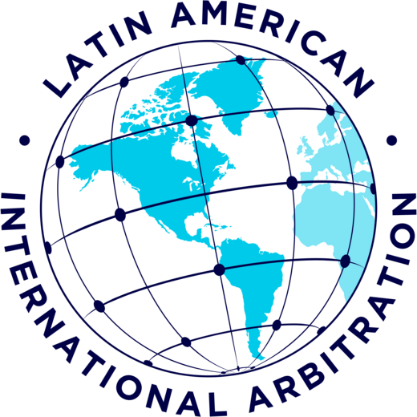
Procuración Judicial 02
02Belleza y audiovisual
 03
03Educación
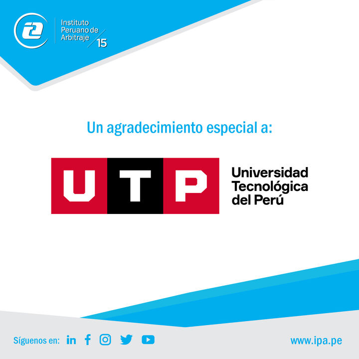
4 piezas reales. ¿Para qué las usarías?
Completaste el recorrido por diseño, redes, video y web.
Ver las piezas en su proyecto ↗Sobre mí
Empecemos por una idea
Diseño, contenido, web o cobertura de un evento. Puedes escribirme aquí o continuar la conversación en LinkedIn.
LinkedIn ↗